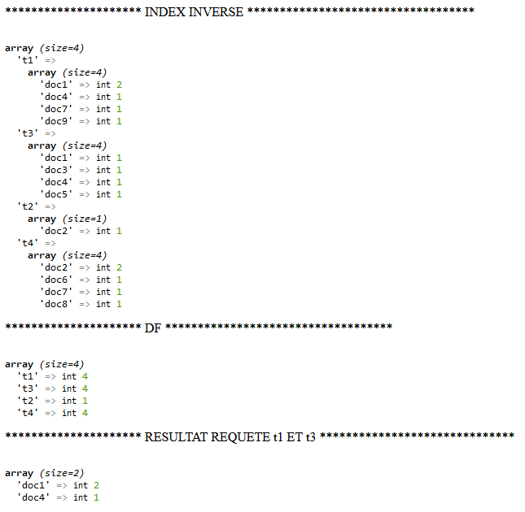

Université Grenoble Alpes - IUT2 - Département informatique
Module R5.Real.15 - Algorithmes pour l'IA
TP Recherche d'Information N°1 - Développement d'un moteur de recherche
1. Implémentation de l'algorithme de création de l'index inversé
- Récupérez indexation.php et indexation0.php ici
- Complétez indexation.php et indexation0.php pour obtenir le résultat ci-dessous

Indication : Pour construire le résultat de la requête t1 ET t3, il faut utiliser la fonction
array_intersect_key
2. Application à l'indexation de dépêches
Nous allons travailler sur un petit corpus constitué de 500 dépêches journalistiques récupérées à partir du flux rss du journal "Le Monde" en 2008.
- Récupérez depeches.txt (version pré-traitée utilisée pour l'indexation) et depeches-base.txt (version brute utilisée pour l'affichage) ici
- Récupérez indexation1.php ici
- Complétez indexation1.php pour obtenir le résultat ci-dessous
Indication : Pour construire le résultat de la requête effet OU co2, il faut utiliser l'opérateur + permettant de concaténer des tableaux.
3. Ajout d'une interface de recherche
- Récupérez search.php ici
- Complétez search.php pour obtenir, comme ci-dessous, un classement basé sur la simple somme
de la pondération tf*idf des termes du document présents dans la requête (pas de division par la norme du document car tous les documents ont des tailles relativement similaires)
- Expliquez l'ordre des résultats pour la requête "effet co2"
4. Compléments
Nous avons développé en quelques lignes de PHP un petit moteur de recherche qui fonctionne.
La reconstruction de l'index à chaque interrogation n'est bien sûr pas souhaitable.
Afin d'éviter cette reconstruction inutile, il faudrait stocker l'index construit dans une base de données et interroger
cette base au moment de la recherche. Réfléchissez au schéma de cette base (tables et structure des tables).